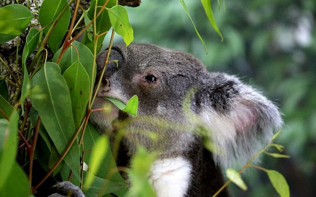
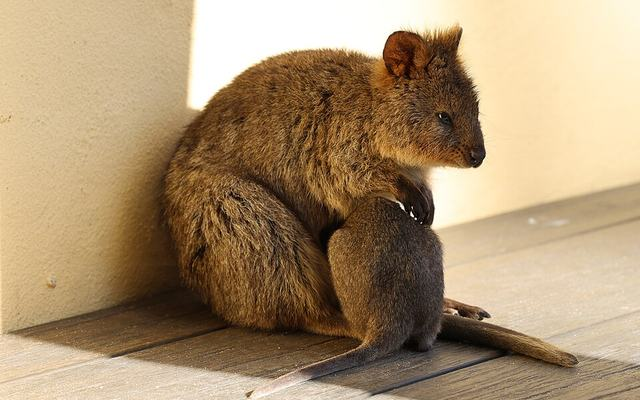
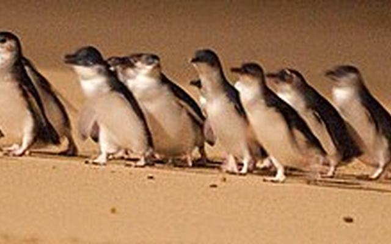
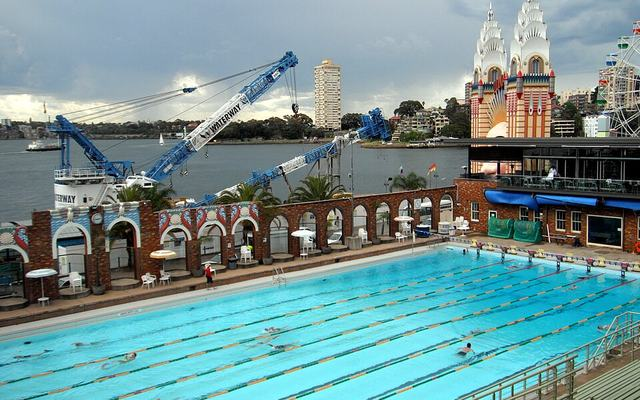
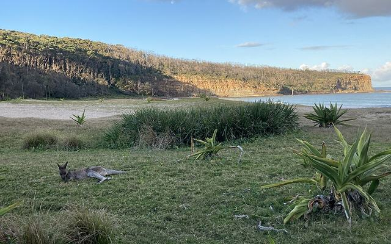
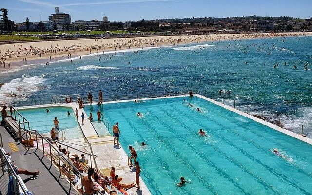
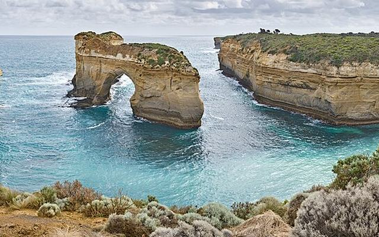
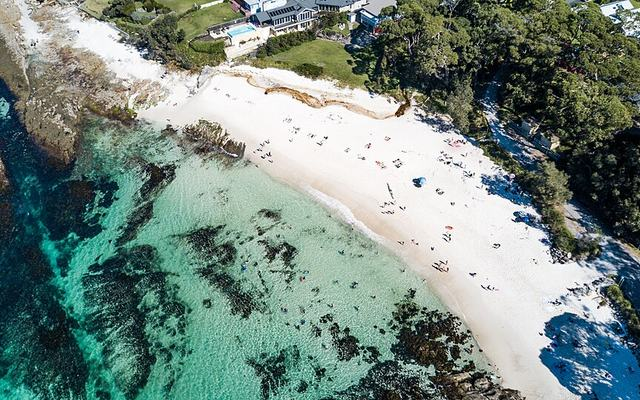
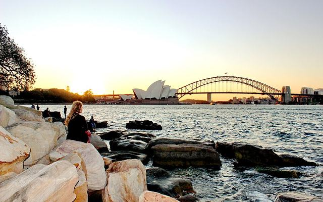

시드니 하버의 노을, 해변까지 내려오는 캥거루, 매일 한 번의 수영. 계획부터 예약까지 여기 한곳에 모았어요.
아이들이 기다리는 동물과 수영, 그리고 어른들이 기다리는 풍경이에요.









회색 점은 가이드의 모든 장소, 이모지는 담아둔 곳, 색 테두리와 숫자가 붙은 이모지는 고른 날에 들르는 곳이에요. 색이 진한 권역이 고른 날의 권역이고, 선은 날짜 순서예요(점선은 도시 간 이동).
시드니 3일 · 멜버른 3일, 각 날짜마다 테마를 하나씩 고르세요. 고른 테마는 다른 날짜 선택지에서 빠지고, 전날 강도에 따라 다음 날 추천 테마가 바뀌어요. 선택은 저장되니 나중에 다시 열어도 이어집니다.
지금 예약해야 할 것 — 어느 플랜으로 가든 서두를 항목
탭하면 체크돼요 — 이 기기에 저장되니 짐 쌀 때 다시 열어서 이어서 확인하세요.
호주는 생물보안 규정이 엄격해요. 핵심은 하나 — 가능/불가능을 스스로 판단하지 말고, 갖고 있으면 무조건 입국신고서에 체크하는 거예요. 신고하면 불이익이 없지만, 미신고 적발 시 벌금(최대 $2,600+)이 부과돼요.
| 품목 | 가능 여부 | 조건 |
|---|---|---|
| 라면(건면+분말스프) | 조건부 | 밀봉 포장·완전 건조 상태. 육수분말에 육류 성분 있으면 더 까다로움. 컵라면 건더기스프 주의 |
| 김·조미김 | 대체로 가능 | 일반 김밥용·조미김은 갈조류 규정과 무관한 경우가 많음. 그래도 신고 필수 |
| 즉석밥(햇반류) | 조건부 | 밀폐 가공식품은 가능. 생쌀·콩류는 별도 규정이라 원칙적 제한 |
| 김치 | 조건부 | 밀봉 상업포장 권장, 발효식품이라 검역관 판단에 따라 갈릴 수 있음 |
| 봉지과자·스낵 | 대체로 가능 | 육류·유제품·신선성분 없으면 대체로 무난 |
| 신선육류·햄·소시지 | 원칙 금지 | 구제역 등 우려로 대부분 압수. 벌금 가장 큰 항목 |
| 신선과일·채소 | 원칙 금지 | 해충·식물병 우려 |
타롱가동물원 부지 안 부티크 호텔. 창밖으로 코알라·에키드나가 다니는 방사 구역과 시드니 하버를 동시에 볼 수 있어요. 조식·동물원 무료입장·"The Sanctuary" 30분 가이드 투어·주차·와이파이가 기본 포함돼요.
| 객실 | 1박(2성인+1아동) |
|---|---|
| Bushland Room | AU$748 |
| Animal View Room | AU$848 |
| Harbour View Room | AU$1,058 |
| Treetop Suite | AU$1,208 |
타스만 드라이브는 굽이치는 초록 언덕과 바다가 함께 보여 SNS에서 화제가 된 게링공(Gerringong)의 뷰포인트예요.
| 구간 | 수단 | 소요시간 |
|---|---|---|
| 센트럴역 → 게링공역 | 기차(키아마 환승, 오팔카드 가능) | 약 2시간25분~2시간39분, 편도 $11~ |
| 게링공역 → 워리비치 | 도보(직선) | 약 13분(993m) |
| 울런공 → 게링공 | 렌터카 | 약 37분 ★대중교통은 비효율적 |
| 울런공 → 게링공 | 기차(키아마 환승) | 약 1시간18분(권장 안 함) |
다오를란도 화덕피자 관련: Da Orlando(348 Keira St, Wollongong)는 게링공이 아니라 울런공에 있어요. 기차로 두 곳을 묶기엔 대중교통이 부실해서 렌터카가 사실상 필수예요. 화요일은 휴무라 요일 선택에 주의하세요(영업시간은 출처마다 달라 방문 전 전화 +61 2 4298 3011로 재확인 추천).
추천 동선: 시드니 → (그랜드퍼시픽드라이브·시클리프브리지 경유) 울런공 약 1.5시간 → Da Orlando 피자 픽업 → 게링공/워리비치 약 37분 → 워리비치 남단(무료주차·화장실·바베큐·놀이터 있어 가족 피크닉 최적) → 시드니 복귀 약 2시간10분. 전체 약 8~9시간.
국립공원 오지 캠핑장 대신 전기·샤워·풀장을 갖춘 정식 홀리데이파크 위주로 골랐어요. 캠퍼밴에 필수인 전기 사이트(파워드 사이트)가 있어야 냉장고·에어컨을 쓸 수 있어서, 특히 2월 한여름엔 이쪽이 아이와 훨씬 편해요.
| 홀리데이파크 | 거리 | 특징 |
|---|---|---|
| NRMA 머라마랑 비치프론트 리조트 | 약 4시간(사우스더라스, 배터맨스베이 인근) | 정식 리조트인데 야생 캥거루가 부지 안을 자유롭게 돌아다니고 해변까지 이어짐. 파워드·언파워드·앙수이트 사이트 60개, 수영장·카페·놀이터 완비. 바로 옆이 페블리비치라 캥거루 밀도가 비슷. |
| NRMA 시드니 레이크사이드 홀리데이파크 | 약 30~40분(노스나라빈) | 가장 가까운 정식 파크. 호수+해변 도보권, 이동 부담 최소화하고 싶을 때. |
| 저비스베이 인근 홀리데이파크(예: 화이트샌즈) | 약 2.5~3시간 | 세계적으로 유명한 새하얀 모래사장(하이엄스비치)과 가까움. 캥거루보다 수영·스노클링 중심. |
여러 지역의 가볼만한곳을 지역별로 묶었어요. 동선 짤 때 같은 지역끼리 묶어서 하루 코스로 쓰기 좋아요.
지역별 맛집·카페. Totti's·Hurricane's Grill·Pizza Bros·Lune Croissanterie는 웨이팅/예약 경쟁이 치열해요 — 날짜 확정되면 바로 예약 추천.
2월은 호주 성수기라 소규모 투어(웜뱃·필립아일랜드)부터 조기 마감돼요. 메모칸에 예약처·가격·확인번호를 적어두면 나중에 한눈에 보여요.
인쇄하거나 스크린샷으로 저장해서 가족 모두의 휴대폰에 넣어두는 걸 추천해요.
여권 분실·사건사고 등 긴급 상황엔 24시간 영사콜센터로 먼저 연락하세요. 무료 연결: +800-2100-0404 (현지 유선전화 기준, 호텔 전화 등에서 시도)
멜버른 체류 중 사건사고는 이쪽이 담당 공관이에요. 근무시간(월~금 09:00~17:00, 점심 12~13시) 외에는 긴급전화로.